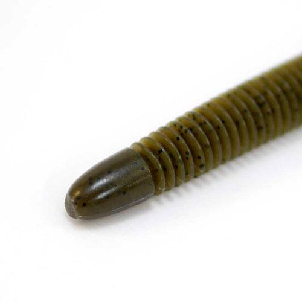
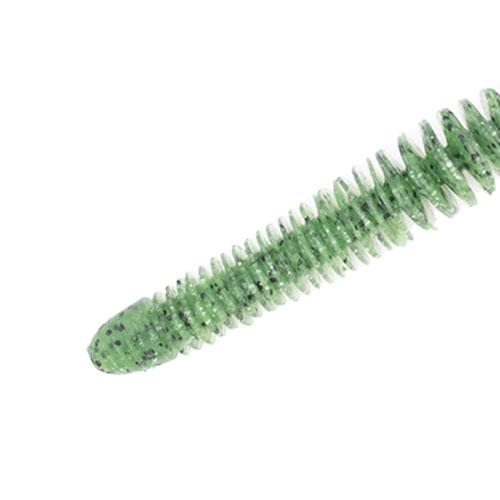
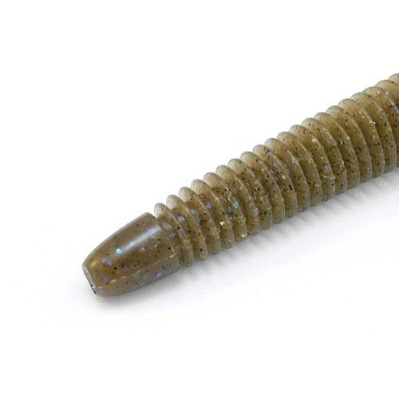
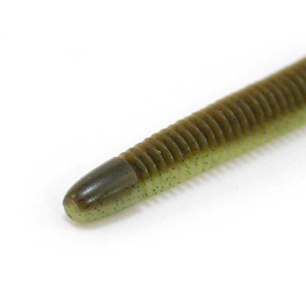

ベローズスティック2.8インチ
（BELLOWS STICK 2.8inch）
ベローズスティック2.8インチ（BELLOWS STICK 2.8inch）はGEECRACK（ジークラック）のスティックワームです。
ボディ全体がリブ形状になった「水噛み最強ワーム」です。全身のリブで水をしっかり噛み、しっかりとした波動とナチュラルなアクションを出します。魚が口にした時に違和感なく奥まで吸い込みやすいのも特徴で、2.8インチは小さめのシルエットで食わせたい時に使えるサイズです。

画像出典:GEECRACK公式HP
スペック
- メーカー
- GEECRACK（ジークラック）
- タイプ
- スティックワーム（全身リブ）
- サイズ
- 2.8inch
- 入数
- 8本
- マテリアル
- オリジナルS.A.Fマテリアル
（塩＋アミノ酸＋フレーバー） - 推奨フック
- #4
- ターゲット
- ブラックバス
- 価格
- 803円〜990円（税込）※サイズにより異なる
▼今すぐチェック

ベローズスティック2.8インチの特徴
全身のリブで水を噛み、味と匂いでも食わせる
-
全身フルリブ構造
繊細で溝の深いリング形状で、しっかりくわえさせ、しっかり水を噛み、しっかり味と匂いを伝える。
-
テールの先まで続くリング
テールの先までリング形状が続いているので、先端までナチュラルなアクションが伝わる。
-
魚を引き寄せるS.A.Fマテリアル
塩（SALT）・アミノ酸（Amino）・フレーバー（Flavor）をブレンドしたオリジナル素材で、匂いと味で魚を引き寄せ、長くくわえさせる。
ベローズスティック2.8インチの使い方
2.8インチは#4のフックでノーシンカーやネコリグ、軽めのテキサスリグにするのが扱いやすいです。ノーシンカーでは全身のリブが水を受けながらゆっくり沈み、着底後はシェイクで細かく震わせます。
大きいサイズではテキサスリグやヘビーキャロ（1/2〜3/4oz）でも使われていて、リグを変えて幅広い状況に対応できます。
ベローズスティック2.8インチの得意な状況
スレたバスに口を使わせたい時、ボトムやカバー際でじっくり誘いたい時が得意です。
小さめの2.8インチは、ベイトが小さい時期や、大きいワームに反応しない時のフォローとして使いやすいサイズです。
ワンポイント
同じ「ベローズスティック」には浮力のあるエラストマー素材の「ベローズスティック フローティング」もあります。水面や中層で使いたい時は、そちらと使い分けるのもオススメです。
サイズの使い分け
| サイズ | 入数 | 推奨フック |
|---|---|---|
| 2.8inch | 8本 | #4 |
| 3.8inch | 7本 | #2 |
| 4.8inch | 6本 | #2/0 |
| 5.8inch | 6本 | #2/0〜#3/0 |
| 8inch | 5本 | #5/0 |
※数値は公式ページより。価格は803円〜990円（税込）で、サイズにより異なります。カラーもサイズによって展開が異なります。
オススメカラー
ベローズスティックは全39色。2.8インチで選べるカラーから、定番の4色を紹介します。

#005 グリーンパンプキン全サイズで展開する定番。まず1つ選ぶならこの色。

#006 ウォーターメロンシードクリアな水で使いやすいナチュラル系。

#283 喰わせモエビエビを意識した食わせのカラー。

#220 グリパンチャートチャートの差し色入り。濁りのある時に。
画像出典:GEECRACK公式HP
ベローズスティック2.8インチに似ているルアー
-
 沈み蟲
issei
詳細はこちら＞
沈み蟲
issei
詳細はこちら＞
脚の付いた虫系ワーム。ノーシンカーで飛距離と微振動が欲しい時に。
-
イモグラブ40
ゲーリーヤマモト
詳細はこちら＞
テールの無いイモ型ワーム。動きを抑えて食わせたい時に。
-
 クネリー4.4インチ
ボトムアップ
詳細はこちら＞
クネリー4.4インチ
ボトムアップ
詳細はこちら＞
くねくね動くスティック系ワーム。大きめのシルエットで誘いたい時に。